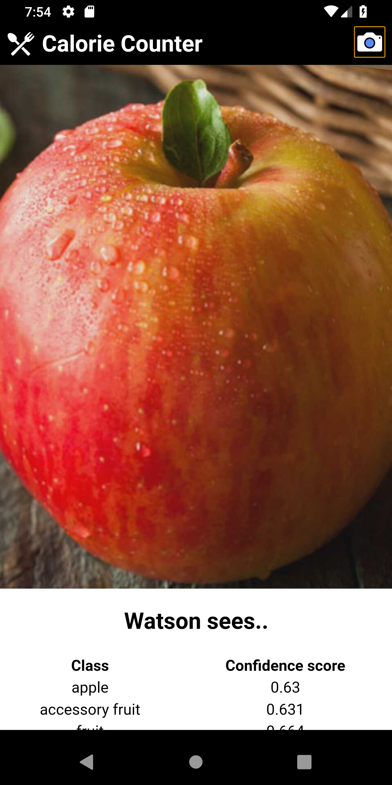
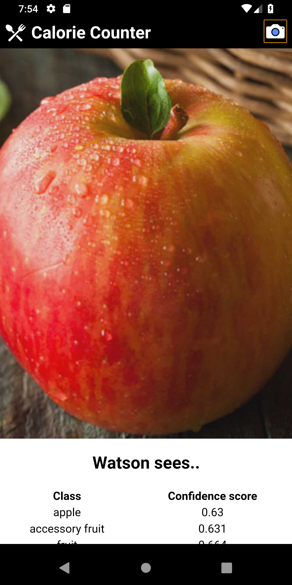
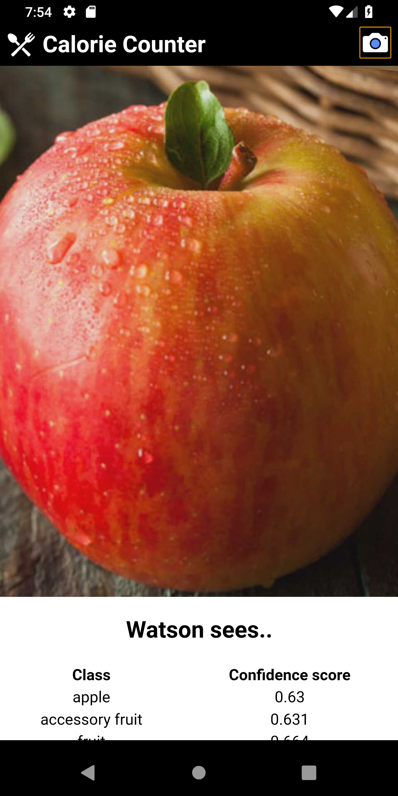

Why count calories yourself when we could do it for you?
(2) Click on the mobile application tab and follow the instructions
 


Are you tired of looking up how many calories your food has? Do you want to find calories on a mobile application?
Click here to download a mobile application that allows you to find how much calories are in foods by taking a picture.
[Instructions] Press the camera icon on the top right. Take a picture of the food item. Press the checkmark button. The results should appear similar to the photos above.
[Additional Steps] Input data into the Track your Calories tab and keep adding meals to find the total amount of calories and fats you've eaten a day.